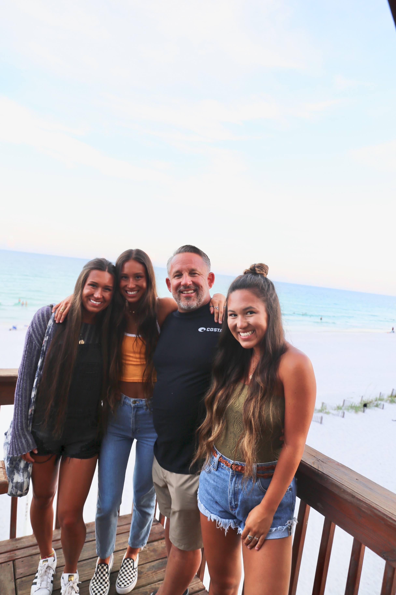
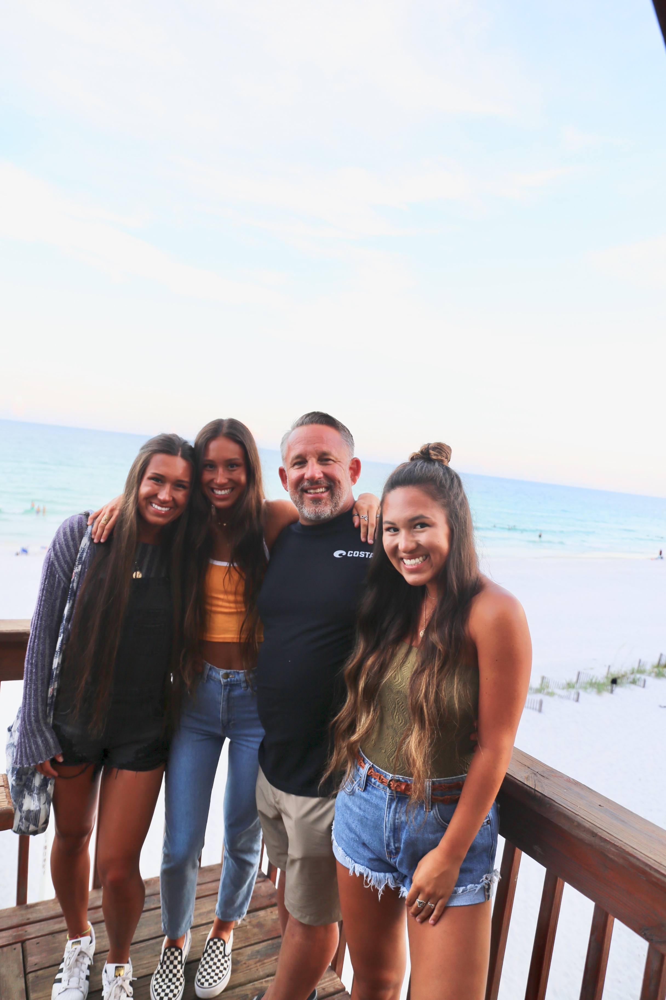
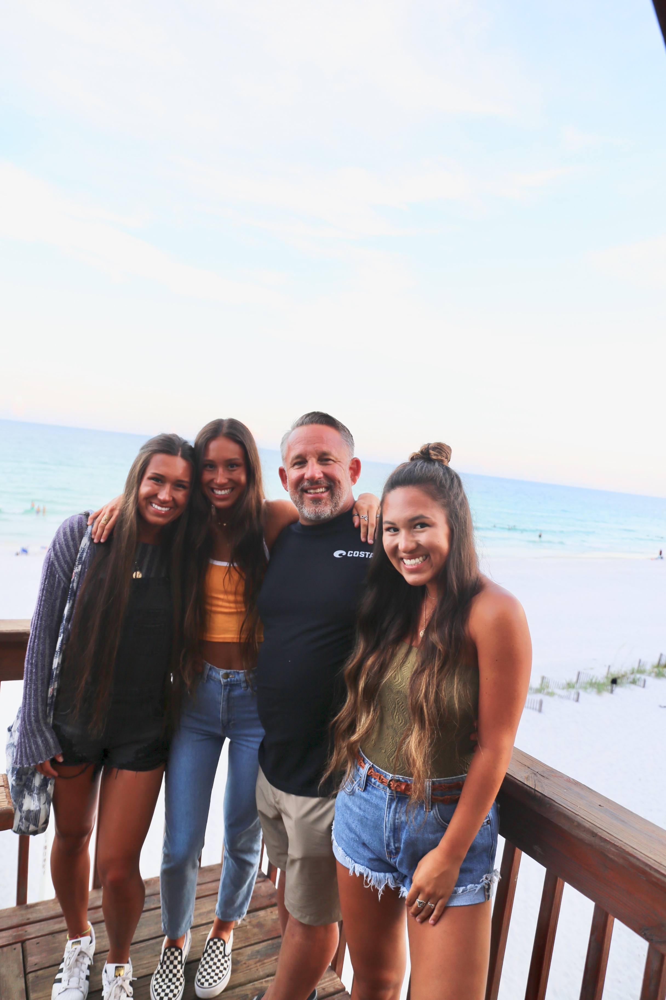

| LAUREN WALSH |
|---|

 


| LAUREN WALSH |
|---|

Here you will find some info about my life and who I am! Enjoy :)
If you know anything about me, it is that I am a big family girl. Family over everything, always. My two sisters are my best friends and I couldn't imagine life without them. My older sister is 21 and is a senior at UGA, while my younger sister is 17 and a junior in high school. Yes, I am the middle child and I LOVE IT. I've had the cool experience of being both an older and younger sister. I also have an 18 year-old step brother who is just as awesome as my sisters. The picture on the far left shows all of us -- my mom's side of the family. Then the photo in the middle right shows my dad with my 2 sisters and I. I am extremely blessed with these people and couldn't ask for better supportors and encouragers in my life.
I am currently a student at the University of Georgia... GO DAWGS! Since I was a kid and even last year as a freshman, I told myself I wanted to study medicine and go to med or nursing school. Turns out life doesn't always go the way I thought it would, and after eight changes to my major (yes that's right, I have changed my major EIGHT times), I finally decided being a nurse or doctor was not for me. At this point in my college ~journey~ as a young freshman, I had have several life crisises questioning what I wanted to do with my life, and found myself exploring majors ranging from exercise and sports science to public relations. Still, I had found nothing that I genuinely enjoyed or could see myself pursing a career in, so during drop/add week at the beginning of this past semester (beginning of my sophomore year), I thought I would give the business side of things a try and changed my major once again. So here I am today, a current Intended Marketing student still figuring it out to some extent, but at least I can now say that this is something that I enjoy and can actually see my future self doing.
I am a pretty diverse person when it comes to things I like to spend my time doing. I love all things from adventuring to cool places, to spending the day binge watching netflix shows (especially American Horror Story, The Office, and Stranger Things). Dogs, Harry Potter, the beach, and my friends are among a few things that can I can spend days talking about. My dog, Margaret (seen in the picture above), is the true love of my life. I am a Harry Potter fanatic and will win Harry Potter trivia on any day. Being at the beach is like heaven to me where I can lay out on the sand forever (something about the sun and the ocean <3). And lastly, my friends are the COOLEST people ever and UGA has blessed me with bringing those people into my life. (The besties can be seen in the last photo).
| MY SOCIAL MEDIA | |
|---|---|
| @lauurenwalsh | |
| @lwalshh | |